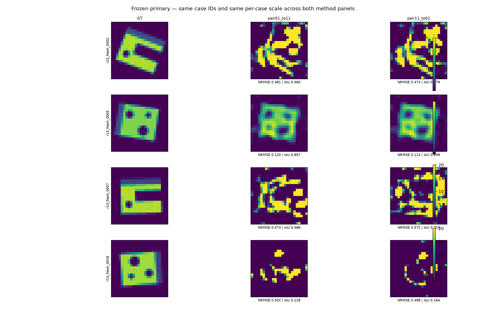
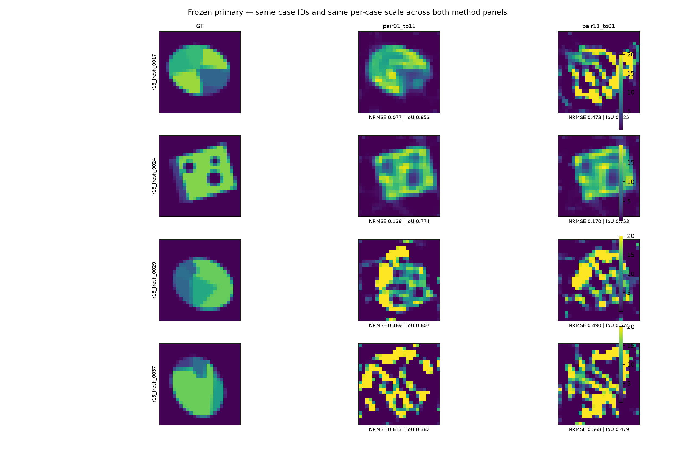
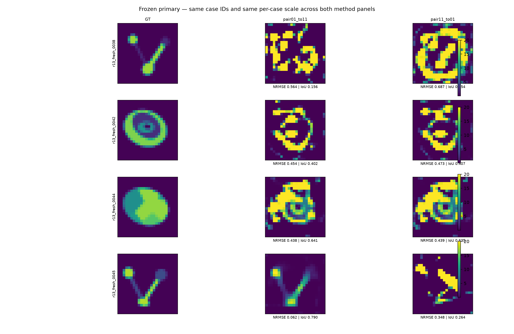
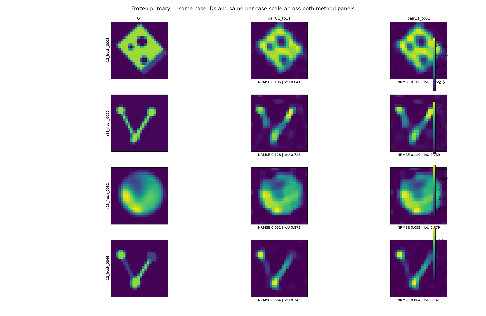
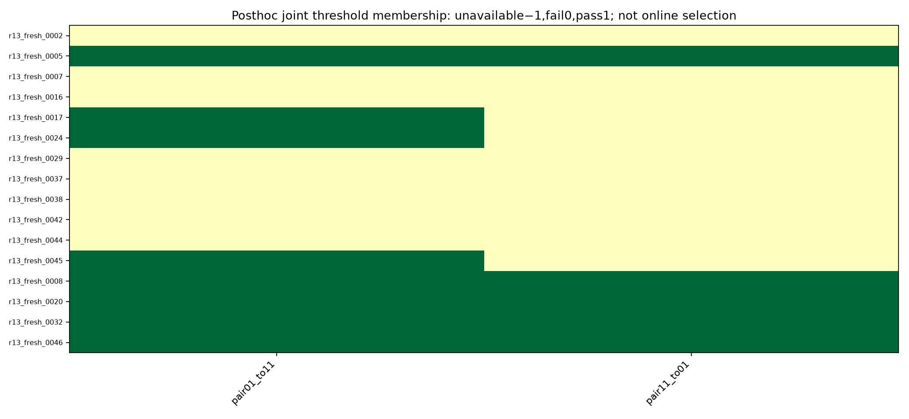
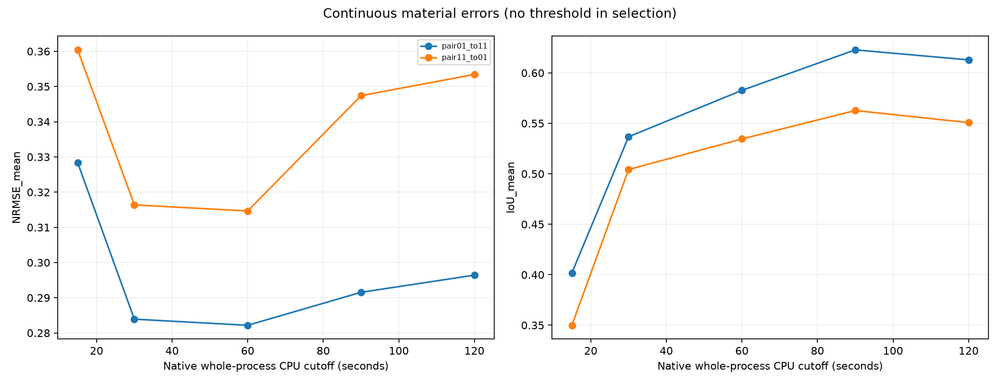
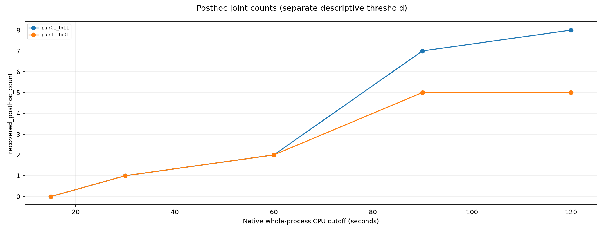

Separate parent-approved cohort; every missing/failed task retained. Continuous errors and posthoc joint threshold are separate. No forward/optimizer/NN is run.
Actual2Dcorrector budget is total absolute120 with unused proposal reallocated. Strict48 pool cutoffs are lower/upper robustness brackets, not measured stopped deployments. All actual costs remain charged.
Public selector replay sums every invoked independent full child cost; it is neither warm restart nor a120second deployment. Cross-grid discrepancy is not a noise certificate.
| Method | Available | Posthoc pass | Denominator | Mean NRMSE | Mean IoU |
|---|---|---|---|---|---|
| pair01_to11 | 16 | 8 | 16 | 0.2964200630545245 | 0.6128884087336998 |
| pair11_to01 | 16 | 5 | 16 | 0.3534380557359899 | 0.5507336821486187 |
DESCRIPTIVE_PAIRED_BOOTSTRAP.csv
DIRECT_PHYSICAL_SEARCH_VIEWS.csv
STRICT48_PAID_POOL_BRACKETS.csv
FIGURES/materials_01_panel1.png

FIGURES/materials_02_panel1.png

FIGURES/materials_03_panel1.png

FIGURES/materials_04_panel1.png


FIGURES/CONTINUOUS_PREFIXES.png

FIGURES/POSTHOC_JOINT_PREFIXES.png
